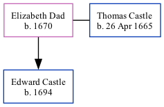

Elizabeth Dad, the 7 times great-grandmother of Nigel Horne, was born in 16701 and married Thomas Castle (with whom she had 1 child, Edward) in Capel-Le-Ferne, Kent, England on May 19, 16912 (Capel Le Ferne, Kent, England).
Public Member Trees Online publication - Provo, UT, USA: The Generations Network, Inc., 2006.Original data - Family trees submitted by Ancestry members.Original data: Family trees submitted by Ancestry members.
England Marriages 1538-1973 - Findmypast
Family Tree

Map
Generated by Ged2Site. Last updated on Jul 20, 2025